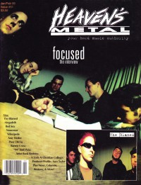
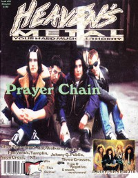

CMnexus
:
Contemporary Christian culture, music, and media.
Magazines
Profiles
Dove Awards
cmnexus.org
CM
nexus
→
Profiles
→
H
→
Brent Hershey
Brent Hershey
< -- Prev
ious
Next-- >
1
Writing credits listing
Jan 1988
in
Notebored
"New Life For Broken Records"
Broken Records
Nov 1988
in
Notebored
"October 2, 1988, the Roxy, Hollywood, CA"
Whitecross
Phil Keaggy
Jul 1990
in
Notebored
"An Authorized Time Line with Mike Roe (Part 1)"
The 77s
,
Michael Roe
Sep 1990
in
Notebored
"An Authorized Time Line with Mike Roe (Part 2)"
The 77s
,
Michael Roe
Stephen Wiley
-
Rhythm and Poetry
Nov 1992
in
Notebored
"Bride's Second Honeymoon"
Bride
Preachers In Disguise
-
Born With The Gift: The John 3:16 Factor
The Newsboys
-
Not Ashamed
Jul 1994
in
Syndicate
9.2
Love Coma
-
Soul Rash
Aug 1994
in
Syndicate
9.3
"Never A Bridesmaid"
Bride
,
Dale Thompson
Sep 1994
in
Heaven's Metal
#49
Whitecross
-
Unveiled
Chatterbox
-
Despite
Oct 1994
in
Syndicate
9.40
Sometime Sunday
-
Stone
Nov 1994
in
Heaven's Metal
#50
"A Thinking Matter"
Undercover
Guardian
-
Swing, Swang, Swung
My Little Dog China
-
The Velvis Carnival
Ignite
-
Bury The Past demo
Plain Clothes
-
Long Way to Go
The SONshines
-
3-song tape
Nov 1994
in
Syndicate
#41
David Mullen
-
David Mullen
Nov 1994
in
Syndicate
#42
"Whole Lot of Changin' Going On"
Guardian

Jan 1995
in
Heaven's Metal
#51
"Focused: The Interview"
Focused
1995
in
Syndicate
#43
Charlie Peacock
-
Everything That's on My Mind
Mar 1995
in
Heaven's Metal
#52
"Fresh Produce"
Independent alternative artists:
Glenn Rowlands
,
David Benson
,
Nonpoint Factor
,
Crimson Thorn

May 1995
in
Heaven's Metal
#53
"Closing the Distance"
The Prayer Chain
"Doing Something Different"
Tourniquet
Sep 1995
in
HM
#55
"Opening A New Window"
John Elefante
Dec 1995
in
HM
#56
"A New + Improved"
Holy Soldier
Apr 1996
in
HM
#58
Everdown
Sum 1996
in
HM
#59
Third Day
< -- Prev
ious
Next-- >
1
CMnexus
(noun)
The magazine index
of modern music
and Christianity
© 2011 CMnexus. Last updated May 2025.
Contact:
Rants and other correspondence to:
editor -AT- cmnexus
-DØT- org
About